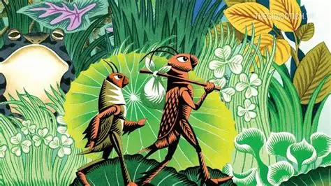

Thông tin tác phẩm
- Tác giả Tô Hoài
- Xuất bản 1941
- Thể loại Truyện thiếu nhi
- Ngôn ngữ Tiếng Việt

“Ở đời mà có thói hung hăng bậy bạ,
có óc mà không biết nghĩ, sớm muộn cũng mang vạ vào thân.”
“Tôi hối hận lắm. Tôi đứng lặng giờ lâu trước nấm mồ bạn. Nghĩ về bài học đường đời đầu tiên mà Dế Choắt đã dạy cho tôi: ở đời mà có thói hung hăng bậy bạ, có óc mà không biết nghĩ, sớm muộn rồi cũng mang vạ vào thân.”